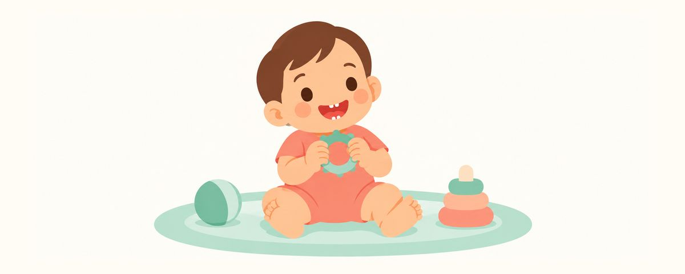

La première dent de bébé : quand elle arrive, dans quel ordre, et comment commencer le brossage
La première dent sort vers 6 mois, en bas devant. La fourchette normale, l'ordre de sortie, le brossage dès le premier jour et quand voir le dentiste.
En un coup d'œil
- Le plus souvent, les dents du bas, devant, en premier. Entre 4 et 12 mois, c'est normal
- Une trace de la taille d'un grain de riz de dentifrice fluoré, deux fois par jour
- Première visite chez le dentiste avant le premier anniversaire
Un petit point blanc pointe sur la gencive de votre bébé : quelle joie, et que de questions ! Quand est-ce normal ? Faut-il déjà brosser ? Comment consoler un bébé grognon ? Voici, pas à pas, ce qu'il est utile de savoir quand la première dent de lait arrive.
Quand et où sort la première dent ?
La première dent de lait sort généralement vers 6 mois, en commençant par les dents du bas, devant. Mais les écarts entre bébés sont grands : certains ont leur première dent à 4 mois, d'autres presque à 12 mois. Dans cette fourchette, tout est normal. Une dent un peu tardive ne veut pas dire que les dents sont fragiles ou que votre bébé grandit moins bien.
En général, les deux incisives du bas sortent d'abord, puis celles du haut suivent dans les mois qui viennent. Arrivent ensuite, peu à peu, les incisives latérales, les premières molaires, les canines et les deuxièmes molaires : vers 2 à 3 ans, les 20 dents de lait sont en place. Si l'ordre change un peu, ce n'est le plus souvent pas un problème.
Avant et après la sortie d'une dent, votre bébé peut baver beaucoup, mordiller sans arrêt ses mains ou des objets, ou mal dormir. C'est la gencive qui démange et gonfle. Cela dure quelques jours tout au plus, puis passe.
Un point essentiel à retenir : dès qu'une seule dent est sortie, elle est exposée au risque de carie à partir de ce moment. Les dents de lait ont une couche extérieure (l'émail) plus fine que les dents d'adulte, et les caries y progressent vite. Le brossage ne commence donc pas « quand toutes les dents seront sorties », mais « le jour où la première dent apparaît ».
Brossez dès le jour où elle apparaît
Au début, brosser chaque jour au même moment compte plus que la durée du brossage. Commencez ainsi.
- Prenez une brosse à dents pour bébé, à petite tête et à poils souples. Quand il n'y a qu'une ou deux dents, un doigtier ou une compresse propre conviennent aussi.
- Mettez une trace de dentifrice fluoré de la taille d'un grain de riz, étalée finement sur les poils.
- Allongez votre bébé sur vos genoux, la tête tournée vers votre ventre : vous voyez bien l'intérieur de la bouche et sa tête est bien calée.
- Brossez doucement, en petits cercles, là où la dent rejoint la gencive. Brossez la face avant et la face arrière.
- Une fois le matin et une fois avant le coucher : 2 fois par jour.
Le brossage le plus important de la journée est celui du coucher. Pendant le sommeil, la salive diminue et nettoie moins bien la bouche. Si votre bébé tète la nuit, essuyez ou brossez aussi ses dents après la tétée.
Ce n'est pas grave si votre bébé ne sait pas encore recracher. Une quantité de la taille d'un grain de riz est une toute petite quantité prévue pour les bébés qui ne savent pas encore recracher : en avaler un peu pendant le brossage n'est en général pas un problème. Au contraire, brosser sans dentifrice pour éviter le fluor prive votre bébé de son effet protecteur contre les caries.
Au début, il est normal que votre bébé pleure ou tourne la tête. Chanter une chanson ou garder chaque jour le même ordre l'aide à s'habituer. Certains jours, vous n'arriverez à brosser que quelques secondes : ce n'est pas grave, vous recommencerez demain.
Quand il est grognon à cause d'une dent, proposez-lui un anneau de dentition bien lavé et rafraîchi au réfrigérateur, ou massez doucement sa gencive avec un doigt propre.
Questions fréquentes
Il va bientôt avoir un an et n'a toujours pas de dent. Est-ce normal ?
Jusqu'à 12 mois, c'est dans la normale. Mais si aucune dent n'est visible après le premier anniversaire, faites vérifier par un dentiste.
Les dents peuvent-elles donner de la fièvre ?
Être grognon et baver quand une dent perce, c'est fréquent. Mais si une forte fièvre ou une diarrhée persistent, ne concluez pas que ce sont les dents : consultez votre pédiatre.
Il n'a qu'une dent : faut-il vraiment du dentifrice ?
Oui. Même une seule dent peut avoir une carie : on utilise donc le dentifrice fluoré dès la première dent, en quantité de la taille d'un grain de riz. La quantité est si faible qu'en avaler un peu pendant le brossage n'est en général pas un problème.
Quand aller chez le dentiste pour la première fois ?
On conseille une première visite dans les 6 mois après la première dent, et au plus tard avant le premier anniversaire. Il ne s'agit pas de soigner, mais de vérifier l'état des dents et de recevoir des conseils sur le brossage et les habitudes de vie.
Dans ces cas, consultez un dentiste
- Aucune dent n'est sortie après le premier anniversaire
- Une bande blanche ou une zone d'un blanc mat, comme de la craie, apparaît sur une dent
- Une tache brune ou noire apparaît sur une dent
- La gencive est gonflée ou saigne pendant plus de quelques jours
- 6 mois ont passé depuis la première dent et votre bébé n'a pas encore vu de dentiste
Recevez-les au bon moment
Saisissez la date de naissance de votre enfant (ou la date prévue d'accouchement) dans l'app Calendrier Dentaire et ces articles vous parviendront sous forme de rappels au bon moment. Gratuit, sans inscription.
Sources
- AAPD · Fluoride Therapy (2023)
- ADA · Eruption Charts (2024)
- FDA · Safely Soothing Teething Pain and Sensitivity in Infants and Toddlers (2018)
Les informations de cet article sont fournies à des fins éducatives générales et ne remplacent pas des soins dentaires professionnels. Parlez à un dentiste de la situation de votre enfant.